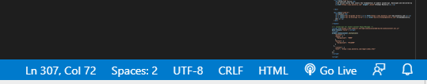

Project Description
Update a basic calculator to use export/import statements to share code with a JavaScript module file.
Your project folder
In your üìÅ js folder is a sub-folder named üìÅ modules that contains these two files:
- An index.html file contains the HTML and CSS.
- An app.js file that contains the working calculator code.
Open both the index.html and app.js files in VS Code.
Open the index.html in a web browser.
Verify the calculator works correctly.
Creating the table with JavaScript
Follow these steps.
- Create a new empty text file named perform-calculations.js.
- Into this file, cut-and-paste the calculate(firstOperand, secondOperand, operator) function from the app.js file.
- From your perform-calculations.js file, export the calculate(firstOperand, secondOperand, operator) function.
- In your app.js file, import the above function.
- At the bottom of your index.html web page, update the JavaScript tag to import the two files app.js and perform-calculations.js modules.
- Save your files.
Adding the Live Server extension to VSCode
JavaScript modules must be loaded in a web server environment. They will not work if loaded from the regular file system.
A quick and simple way to test web pages on your computer in a web server environment is to install the Live Server extension to VSCode. Here are the steps:
- In VSCode, click the Extensions icon in the Toolbar at the left of the screen.
- Search for and then install the Live Server extension.
After installing the extension, you should see a link to it at the bottom-right of the VSCode window.
Working with Live Server
To turn on Live Server, click the link at the bottom-right of the screen. You should see a message similar to the following.

Also, the currently open web page in VSCode will open in your default web browser in a web server environment.
To display another web page in a server environment, right-click on the file in the VSCode Explorer panel and choose Open with Live Server.
To turn off Live Server, click its link at the bottom-right of the screen.
Display your Calculator project with Live Server and verify the program logic works correctly.